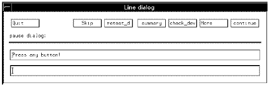
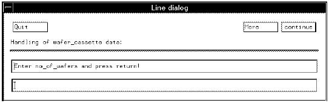

LINE_DIALOG
This expression creates a window in the production environment with a predefined set of buttons. A few of the buttons' names and functionalities will change depending on which level the LINE_DIALOG (or SCREEN_DIALOG) is used; for example, the buttons check_dev and restest_d appear when the LINE_DIALOG is used in a device level, while on a wafer level they appear as check_waf and retest_w.
Including the following lines in the ON_PAUSE section of an application model file, results in the screen shown below.
{ON_PAUSEpause:
LINE_DIALOG;

Normally, however, you would use this expression in conjunction with the DIALOG_INPUT expression; the following lines show a typical example.
The lines,
{wafer_cassette:
LINE_DIALOG
*no_of_wafers=DIALOG_INPUT/REGEXP(int);
result in the following screen,
